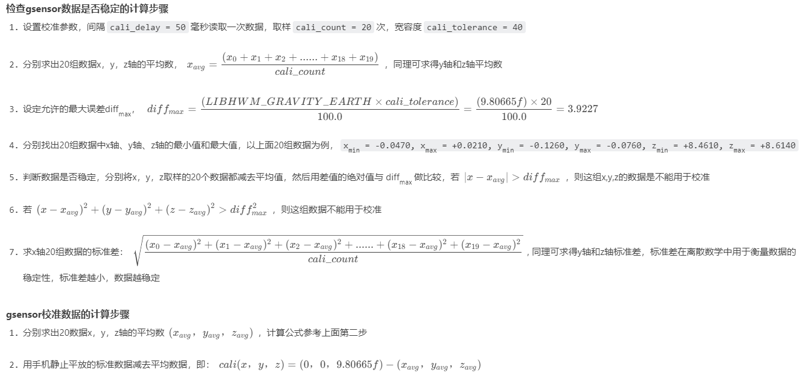

README
mt6762平台dts加载流程分析。
参考
前言
在之前的文章中已经对设备树的基本概念作了讲解, 操作系统（例如在 Android 中使用的 Linux 内核）会使用 DT 来支持 Android 设备使用的各种硬件配置。硬件供应商(ODM)会提供自己的 DT 源文件，接下来 Linux 会将这些文件编译到引导加载程序使用的设备树 Blob (DTB) 文件中。
Android在原有的DT基础上增加了设备树叠加层的处理方式。进一步的对于芯片产品的DT和开发者(ODM/OEM/产品开发者)的DT做了解耦。
设备树叠加层 (DTO) 可让主要的(ODM)设备树 Blob (DTB) 叠加在Soc设备树上。使用 DTO 的引导加载程序可以维护系统芯片 (SoC) DT，并动态叠加针对特定设备(ODM)的 DT，从而向树中添加节点并对现有树中的属性进行更改。 本篇文章主要讲述如下内容:
DT的专有名词
Bootloader 加载DT的基本流程
Android 下DTO的实现以及原理
实际案例-MT8167 平台DTS的加载完整流程
DT相关的专有名词
名词 |
解释 |
|---|---|
DT |
Device Tree |
DTB |
Device Tree Blob |
DTBO |
Device Tree Blob for Overlay |
DTC |
Device Tree Compiler |
DTO |
Device Tree Overlay |
DTS |
Device Tree Source |
FDT |
Flattened Device Tree, a binary format contained in a .dtb blob file |
Dts |
DTS即Device Tree Source，是一个文本形式的文件，用于描述硬件信息。一般都是固定信息，无法变更，无法overlay。 |
Dtsi |
可以理解为dts的公共部分，添加、变更非常灵活。Dtsi包含在dts中。 |
Dtb |
Dtb编译出来的二进制 |
Dtbo |
Overlay编译出来的二进制 |
dtbo-base |
指定overlay是以哪个dtb为base来覆盖的。 |
Node |
树的节点 |
Property |
属性 |
摘要
dtb在
Bootloader 加载DT的基本流程

如上图所示，系统加载DT主要包含: DTS源文件编译, .dtb分区以及对应镜像文件生成, bootloader运行将.dtb 分区的文件加载到内存中, 将对应的内存地址通过寄存器传递到kernel。
在支持DTO的Android下, DT 是由以下两个部分组成:
Main DT, 主要是Soc-only的部分以及默认的系统配置，例如cpu配置/内存相关配置等，soc的供应商提供, 本文所用的MT8167 那么这个Main DT就是由MTK提供的.（a6650-scuba-iot.dts）
Overlay DT, 该Soc所对应的产品需要的特定配置, 主要是由ODM/OEM提供，这里可以理解为开发者自己定义(当然目前在MT8167上MTK也提供了基本的Oerlay DT基本模板)(a6650-scuba-iot-idp-overlay.dts)
编译阶段
通过dtc(device tree compiler)将Main DT dts源文件编译为.dtb文件.
通过dtc(device tree compiler)将Overlay DT的dts源文件编译为后缀名为.dtbo的文件.
这里需要注意的是, .dtb和.dtbo 的文件格式是相同的都是FDT. 后缀名不同只是为了区分.
dtb分区
在MT8167这一平台上是将dtbo划分为了独立的分区, 具体的分析在实际案例章节会详细说明.
运行

在bootloader中将.dtb文件读取到内存中
在bootloader中将.dtbo文件从dtbo分区(emmc指定分区)读取到内存中.
将.dtb 和 .dtbo 合并
在bootloader跳转启动kernel时，将该内存地址通过寄存器传递给到kernel
关于这个环节的详细流程在实际案例章节会详细说明，如：
0003_多机型DTB兼容方案.md
实际案例QCM2290平台DTS的编译完整流程
QCM2290平台的Main DT和Overlay DT一览 截取了QCM2290平台Main DT的部分内容, 关于Main DT 和 Oerlay DT 在上一章节”Bootloader 加载DT的基本流程”已描述.
a6650-scuba-iot.dts:
/dts-v1/;
#include "scuba-iot.dtsi"
/ {
model = "Qualcomm Technologies, Inc. Scuba IOT SoC";
compatible = "qcom,scuba-iot";
qcom,board-id = <0 0>;
soc {
pax_board_info {
compatible = "pax,board_info";
pax,main_board = "V01";
pax,port_board = "V01";
pax,terminal_name = "A6650";
};
};
};
基于上述截取的部分内容可以看到，针对QCM2290平台+Android Main DT由一个文件构成,makefile如下：
ifeq ($(CONFIG_BUILD_ARM64_DT_OVERLAY),y)
dts-dirs += a6650
dts-dirs += m9200
endif
ifeq ($(CONFIG_BUILD_ARM64_DT_OVERLAY),y)
dtbo-$(CONFIG_ARCH_SCUBA) += a6650-scuba-iot-idp-overlay.dtbo
a6650-scuba-iot-idp-overlay.dtbo-base := a6650-scuba-iot.dtb //指定a6650-scuba-iot-idp-overlay.dtbo的dtb
endif
always := $(dtb-y)
subdir-y := $(dts-dirs)
clean-files := *.dtb *.dtbo
继续看Overlay DT,
a6650-scuba-iot-idp-overlay.dts:
/dts-v1/;
/plugin/;
#include <dt-bindings/interrupt-controller/arm-gic.h>
#include "scuba-iot-idp.dtsi"
/ {
model = "Qualcomm Technologies, Inc. Scuba IOT IDP";
compatible = "qcom,scuba-idp", "qcom,scuba-iot", "qcom,idp";
qcom,msm-id = <473 0x10000>, <474 0x10000>;
qcom,board-id = <34 0>;
soc {
pax_board_info {
compatible = "pax,board_info";
pax,main_board = "V01";
pax,port_board = "V01";
pax,terminal_name = "A6650";
};
};
};
&soc {
//[FEATURE]-Add-begin by wugangnan@paxsz.com, 2022/07/06, for charger and type-c driver
rt_pd_manager:rt_pd_manager {
compatible = "richtek,rt-pd-manager";
};
};
&pm2250_charger {
qcom,batteryless-platform;
};
这里需要注意的是，在a6650-scuba-iot-idp-overlay.dts中&符号在dts语法中是引用的意思，这里暂时可以理解为:
Main DT 和 Overlay DT的构建
在分析之前提前揭晓下答案:
Main DT
-> a6650-scuba-iot.dts
-> DTC - a6650-scuba-iot.dtb
-> CAT a6650-scuba-iot.dtb && zImage > zImage-dtb中
也就是Main DT最终会包含在boot.img中
Overlay DT
-> a6650-scuba-iot-idp-overlay.dts
-> DTC - a6650-scuba-iot-idp-overlay.dtb
-> mkimage a6650-scuba-iot-idp-overlay.dtb -> dtbo.img
也就是Overlay DT最终会包含在odmdtbo.img,作为独立的分区文件写入设备的指定分区
可知dtb/dtbo生成目录为out/target/product/bengal/obj/kernel/msm-4.19/arch/arm64/boot/dts/vendor/qcom/:
wugn@jcrj-tf-compile:qcom$ tree
.
├── a6650
│ ├── a6650-scuba-iot.dtb
│ ├── a6650-scuba-iot-idp-overlay.dtbo
│ └── modules.order
├── a6650-scuba-iot.dtb
├── a7000-scuba-iot.dtb
├── bengal-1gb.dtb
├── bengal-2gb.dtb
├── bengal.dtb
├── bengal-iot-2gb.dtb
├── bengal-iot.dtb
├── bengalp.dtb
├── bengalp-iot-2gb.dtb
├── bengalp-iot.dtb
├── khaje.dtb
├── m9200
│ ├── m9200-scuba-iot.dtb
│ ├── m9200-scuba-iot-idp-overlay.dtbo
│ └── modules.order
├── m9200-scuba-iot.dtb
├── modules.order
├── scuba-2gb.dtb
├── scuba.dtb
├── scuba-iot-2gb.dtb
├── scuba-iot.dtb
├── scubap.dtb
├── scubap-iot.dtb
├── scubap-iot-idp-2gb.dtb
└── scubap-iot-idp.dtb
Main DT构建流程
相关文件以及路径:
# 源文件
kernel/msm-4.19/arch/arm64/boot/dts/vendor/qcom/a6650/a6650-scuba-iot.dts
# 相关Makefile
kernel/msm-4.19/arch/arm64/boot/Makefile
kernel/msm-4.19/scripts/Makefile.lib
下面来看下具体的构建过程,在arm64/boot/Makefile中有如下相关代码:
# 一般在kernel的配置文件apollo_defconfig中将CONFIG_BUILD_ARM64_APPENDED_DTB_IMAGE_NAMES 定义为了a6650-scuba-iot
# 我们没定义，使用dtb-y的，我们在Makefile文件里有添加
#a6650/Makefile
#6:always := $(dtb-y)
# 也就是这里DTB_NAMES := a6650-scuba-iot
DTB_NAMES := $(subst $\",,$(CONFIG_BUILD_ARM64_APPENDED_DTB_IMAGE_NAMES))
ifneq ($(DTB_NAMES),)
DTB_LIST := $(addsuffix .dtb,$(DTB_NAMES))
else
DTB_LIST := $(dtb-y)
endif
DTB_OBJS := $(shell find $(obj)/dts/ -name \*.dtb)
# Kernel源码目录: Documentation/kbuild/makefiles.txt -> --- 6.7 Commands useful for building a boot image if_changed
$(obj)/Image.gz-dtb: $(obj)/Image.gz $(DTB_OBJS) FORCE
$(call if_changed,cat)
如上图所截取的部分Makfile, 在构建Image.gz-dtb时, 首先会构建Image 和 $(DTB_OBJS)-a6650-scuba-iot.dtb。在构建构建生成Image和a6650-scuba-iot.dtb会调自定义的cat指令将a6650-scuba-iot.dtb追加到zImage尾部.
以上描述了Main DT的构建以及如何追加到zImage.
Overlay DT构建
相关文件以及路径:
# 源文件
kernel/msm-4.19/arch/arm64/boot/dts/vendor/qcom/a6650/a6650-scuba-iot-idp-overlay.dts
# Makefile
kernel/msm-4.19/arch/arm64/boot/qcom/dts/Makefile
scripts/drvgen/drvgen.mk
kernel/msm-4.19/arch/arm64/boot/Makefile
下面来看下具体的构建过程,在arch/arm64/Makefile有如下代码:
boot := arch/arm64/boot
# 当make 目标zImage-dtb时，会先构建以赖的dtbs，然后是$(DTB_OVERLAY_IMAGE_TAGERT)
zImage-dtb: vmlinux scripts dtbs $(DTB_OVERLAY_IMAGE_TAGERT)
$(Q)$(MAKE) $(build)=$(boot) MACHINE=$(MACHINE) $(boot)/$@
# 构建dtbs
dtbs: prepare scripts
# 通过debug以及上下文分析得知如下编译指令是:
# make arch/arm/boot/dts
# 也就是会执行arch/arm/boot/dts/下的Makefile
$(Q)$(MAKE) $(build)=$(boot)/dts
继续执行kernel/msm-4.19/arch/arm64/boot/dts/下的Makefile:
ifeq ($(strip $(CONFIG_BUILD_ARM_DTB_OVERLAY_IMAGE)), y)
DTB_LIST += $(addsuffix .dtb, $(subst $\",,$(CONFIG_BUILD_ARM_DTB_OVERLAY_IMAGE_NAMES)))
endif
targets += $(DTB_LIST)
# kernel/msm-4.19/arch/arm/boot/dts/Makefile
# CONFIG_BUILD_ARM_DTB_OVERLAY_IMAGE是在arch/arm/configs/xxxdefconfig中定义的，在我这个案例中为CONFIG_BUILD_ARM_DTB_OVERLAY_IMAGE_NAMES没定义，定义了dtb-y
DTB_NAMES := $(subst $\",,$(CONFIG_BUILD_ARM_APPENDED_DTB_IMAGE_NAMES))
ifneq ($(DTB_NAMES),)
DTB_LIST := $(addsuffix .dtb,$(DTB_NAMES))
else
DTB_LIST := $(dtb-y)
endif
targets += dtbs dtbs_install
# 将构建Overlay dts的目标添加到targets中进行a6650-scuba-iot-idp-overlay.dts的构建, 输出目标为a6650-scuba-iot-idp-overlay.dtb
targets += $(DTB_LIST)
看到这里你可能会有疑问? 为什么赋值给targets 关于这一点kernel官方文档有做了初步的说明,
# 对于dtc构建dts的规则做了基本的说明
dtc
Create flattened device tree blob object suitable for linking
into vmlinux. Device tree blobs linked into vmlinux are placed
in an init section in the image. Platform code *must* copy the
blob to non-init memory prior to calling unflatten_device_tree().
To use this command, simply add *.dtb into obj-y or targets, or make
some other target depend on %.dtb
A central rule exists to create $(obj)/%.dtb from $(src)/%.dts;
architecture Makefiles do no need to explicitly write out that rule.
Example:
targets += $(dtb-y)
clean-files += *.dtb
DTC_FLAGS ?= -p 1024
# 而dtc自定义是在scripts/Makefile.lib中实现
quiet_cmd_dtc = DTC $@
cmd_dtc = mkdir -p $(dir ${dtc-tmp}) ; \
$(CPP) $(dtc_cpp_flags) -x assembler-with-cpp -o $(dtc-tmp) $< ; \
$(srctree)/scripts/dtc/dtc_overlay -@ -O dtb -o $@ -b 0 \
-i $(dir $<) $(DTC_FLAGS) \
-d $(depfile).dtc.tmp $(dtc-tmp) ; \
cat $(depfile).pre.tmp $(depfile).dtc.tmp > $(depfile)
$(obj)/%.dtb: $(src)/%.dts FORCE
$(call if_changed_dep,dtc)
dtc-tmp = $(subst $(comma),_,$(dot-target).dts.tmp)
以上的构建只是将a6650-scuba-iot-idp-overlay.dts编译生成了a6650-scuba-iot-idp-overlay.dtb还是并不是最终烧录到dtb分区的Overlay DT.下面来继续看下中的dtb image是如何生成的.
# arch/arm/Makefile
# 前面的内容已经讲述了dtbs的构建生成了a6650-scuba-iot-idp-overlay.dtb，下面继续看下$(DTB_OVERLAY_IMAGE_TAGERT)的构建
zImage-dtb: vmlinux scripts dtbs
$(Q)$(MAKE) $(build)=$(boot) MACHINE=$(MACHINE) DTSSUBDIR=$(DTSSUBDIR) $(boot)/$@
bootloader中如何加载dtb和dtbo
针对MT6762平台, bootloader 是由preloader和lk两部分构成，在这里就不做过多的描述。 我们直接来看下在lk中是如何加载相关DTB内容的. 在lk中是如何加载Main DT的,
参考：
0003_多机型DTB兼容方案.md
/ vendor/mediatek/proprietary/bootable/bootloader/lk/app/mt_boot/mt_boot.c
// 在跳转到kernel前需要先加载相关的dtb到内存中
int boot_linux_fdt(void *kernel, unsigned *tags,
unsigned machtype,
void *ramdisk, unsigned ramdisk_sz)
{
void *fdt = tags;
int ret = 0;
int offset;
char tmpbuf[TMPBUF_SIZE];
//当前使用的kernel是32bit
if (g_is_64bit_kernel) {
...
}
else {
dprintf(INFO, "32 bits kernel\n");
zimage_size = *(unsigned int *)((unsigned int)kernel + 0x2c) - *
(unsigned int *)((unsigned int)kernel + 0x28);
//在“Main DT和Overlay DT的构建”这一章节中已经做了说明，在这一平台Main DT是直接跟在zImage后面.
// 获取到dtb_addr(这里的前提是lk已经把zImage-dtb分区的内容全部加载到内存了)
dtb_addr = (unsigned int)kernel + zimage_size;
wake_up_iothread();
wait_for_iothread();
}
//在获取到dtb_addr后，需要校验下dtb的FD_Magic，FD_Magic=0xd00dfeed
if (fdt32_to_cpu(*(unsigned int *)dtb_addr) == FDT_MAGIC) {
#if CFG_DTB_EARLY_LOADER_SUPPORT
dtb_size = fdt32_to_cpu(*(unsigned int *)(fdt + 0x4));
#else
dtb_size = fdt32_to_cpu(*(unsigned int *)(dtb_addr + 0x4));
#endif
} else {
dprintf(CRITICAL, "Can't find device tree. Please check your kernel image\n");
while (1)
;
}
//将加载到内存的Main DT memcpy 到fdt(内存指针)
memcpy(fdt, (void *)dtb_addr, dtb_size);
...
// 将Overlay DT(odmdtbo.img)从dtbo分区加载到内存中并与Main DT合并，合并后的dtb存储在指针:g_fdt
/*The memory pointed to by "g_fdt" is the location that the Linux kernel expects to find the device tree, and it is at least a few mega-bytes free. The merged device tree is therefore copied to that space.
*/
// dtb_overlay函数的具体实现这里就不在展开了，相关代码比较好理解.
bool rtn = dtb_overlay(fdt, dtb_size);
...
if (platform_atag_append) {
//将fdt追加到atag中，最终通过r2寄存器传递给kernel
ret = platform_atag_append(fdt);
if (ret) {
assert(0);
return FALSE;
}
}
}
kernel中是如何使用获取到合并后的DT
在kernel-xx/arch/arm64/kernel/setup.c中:
// arch/arm/kernel/setup.c
void __init setup_arch(char **cmdline_p)
{
const struct machine_desc *mdesc;
setup_processor();
/* arch/arm/kernel/head-common.S中赋值的.
.long __atags_pointer @ r6
str r2, [r6] @ Save atags pointer
而r2是lk(bootloader)用于与内存通信的媒介，传递了atags的内存地址.
r2包含了dtb pointer.
*/
mdesc = setup_machine_fdt(__atags_pointer);
}